Research-informed interaction design · Physical computing · HCI
Flow State Timer
Rethinking Pomodoro: from scheduled interruptions to self-directed focus
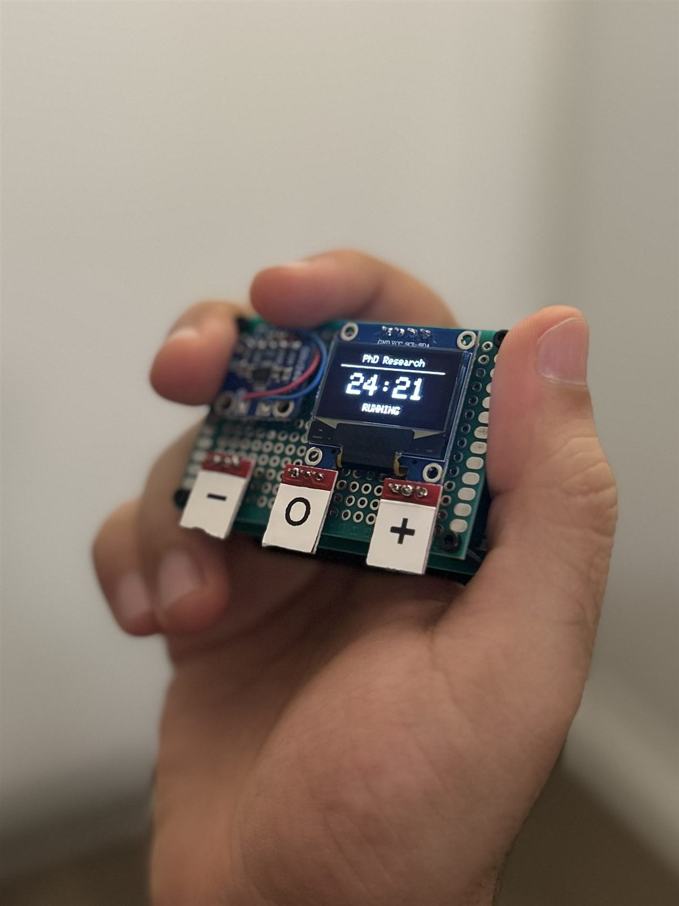
Project overview
The Pomodoro Technique offers a simple way to structure work: focus for a fixed period, then take a scheduled break. While this structure can make beginning a task feel more manageable, I noticed a tension in my own workflow. By the time the countdown ended, I was sometimes deeply engaged in the activity, and the reminder to stop felt more disruptive than helpful.
Design question
What if a productivity timer helped people start working without telling them when to stop?
The device
I designed and prototyped Flow State Timer, a tangible focus device that begins with a short, adjustable commitment and automatically transitions into an open-ended stopwatch once the initial goal is reached.
Rather than enforcing a break, the device allows users to continue working until they choose to stop. The interface combines three capacitive touch controls, a minimal OLED display, and haptic feedback to support physical interaction without requiring a smartphone.
Prototype in action
Research grounding
The project draws on research in task interruption, self-regulated learning, and psychological flow. It explores the hypothesis that separating task initiation from task continuation may provide a more flexible and less disruptive approach to time management.
Building the prototype
-
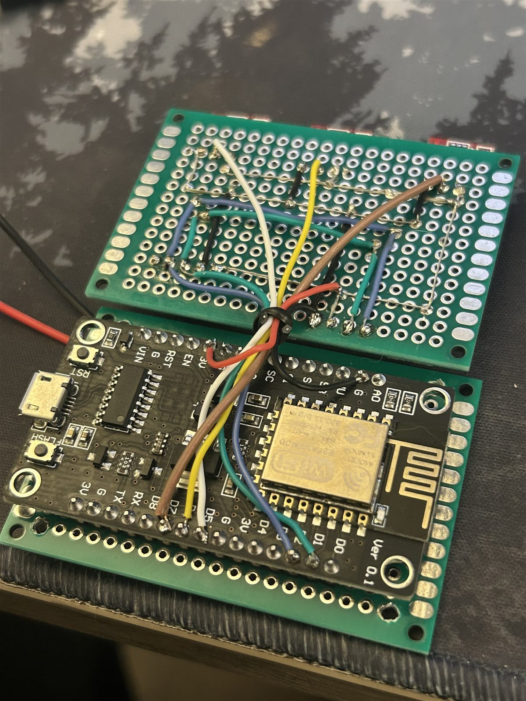
01 Wiring the microcontroller to the control board -
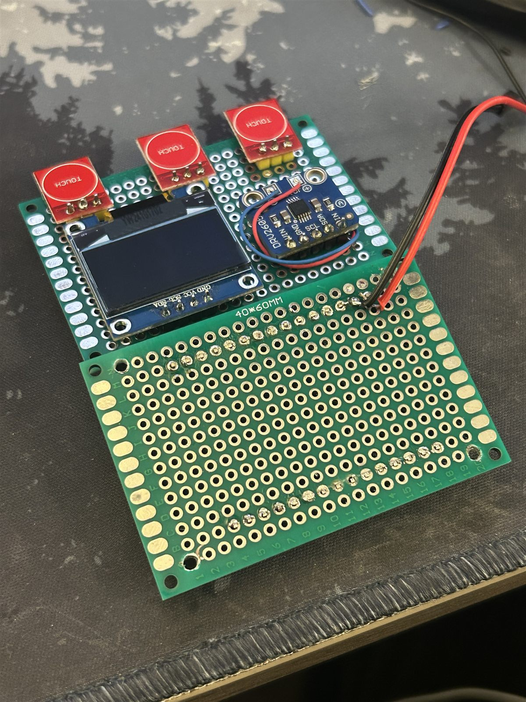
02 Mounting the OLED display and three capacitive touch pads -
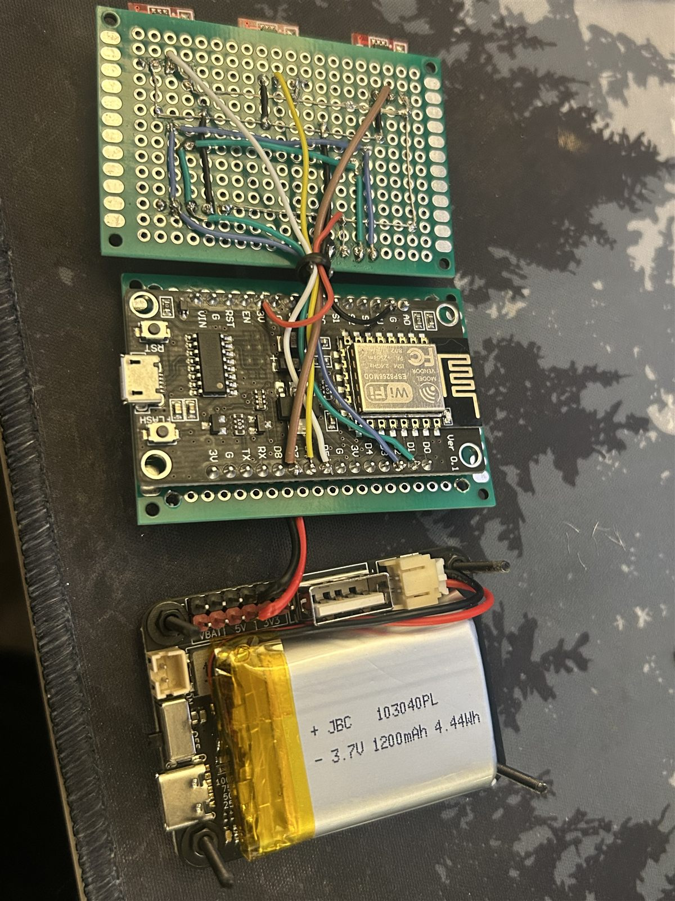
03 Adding the battery layer for untethered use -
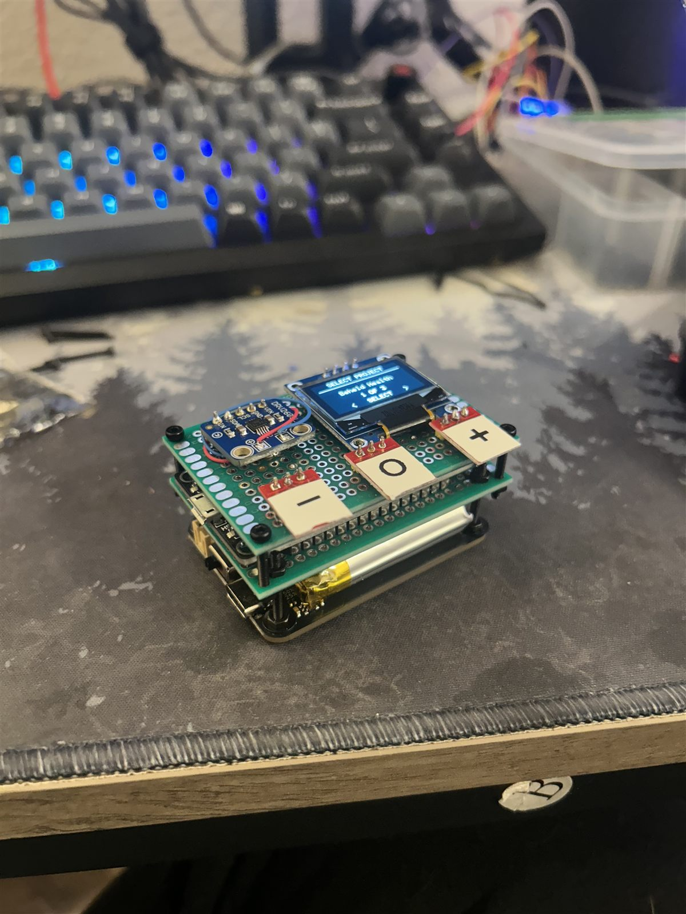
04 The assembled, stacked prototype -
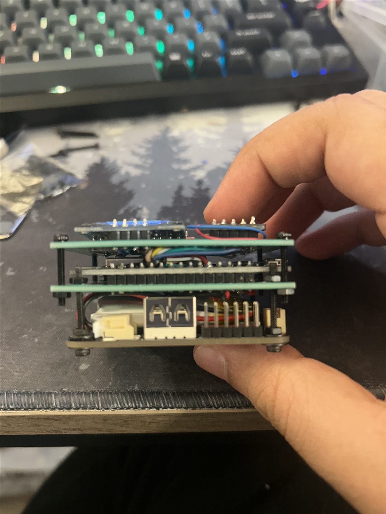
05 Side view of the layered build
More from the build
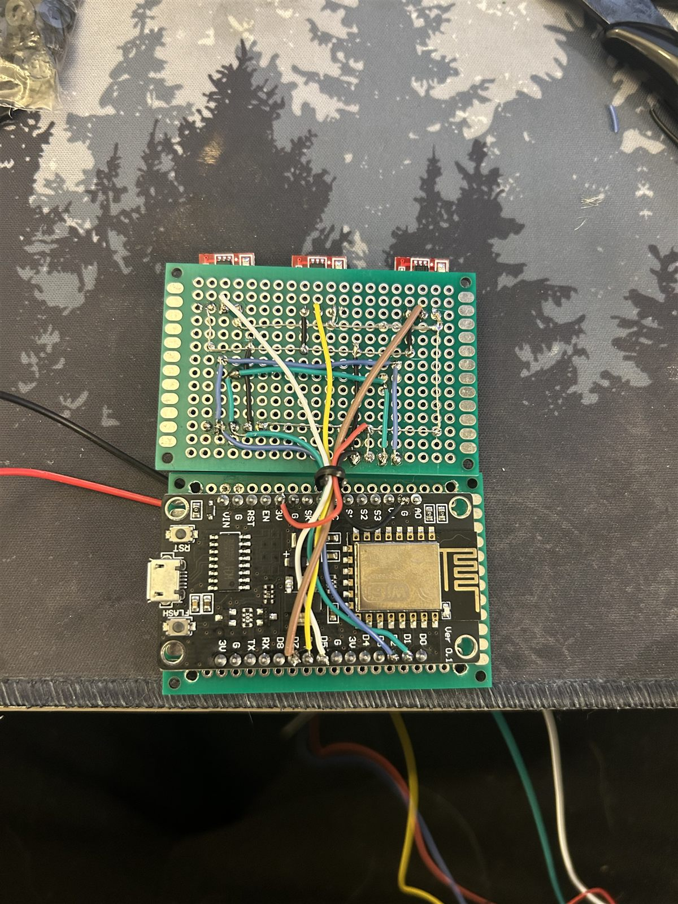
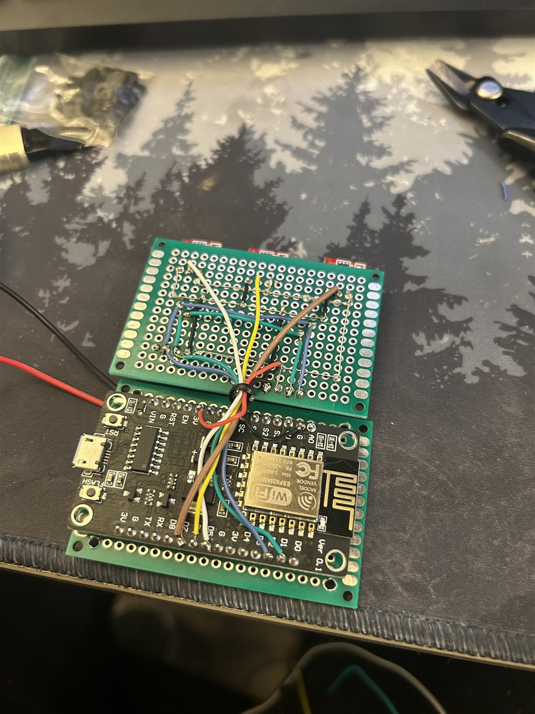
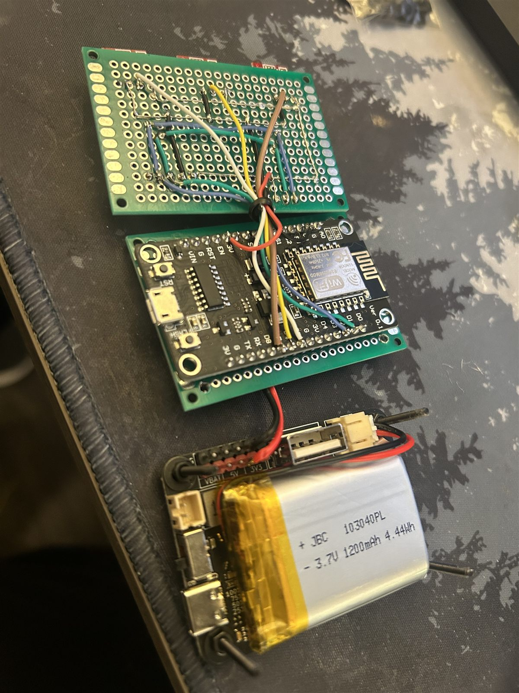
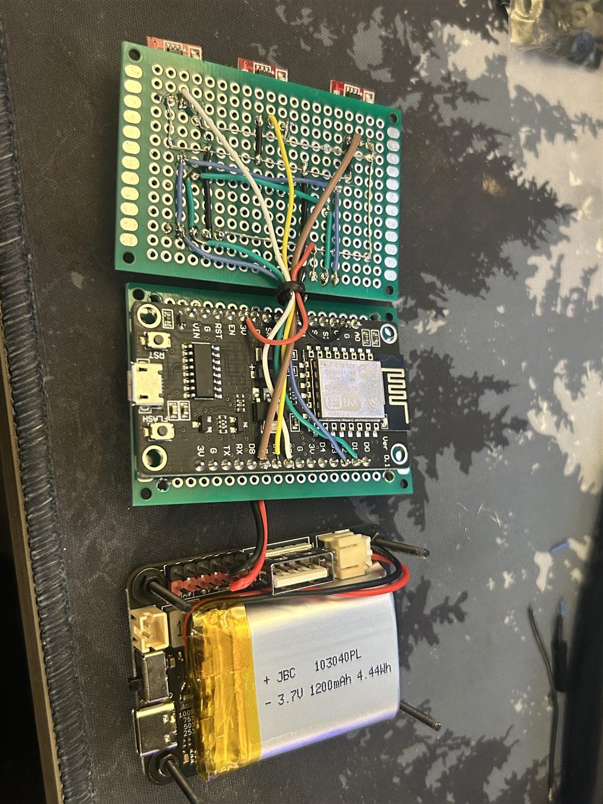
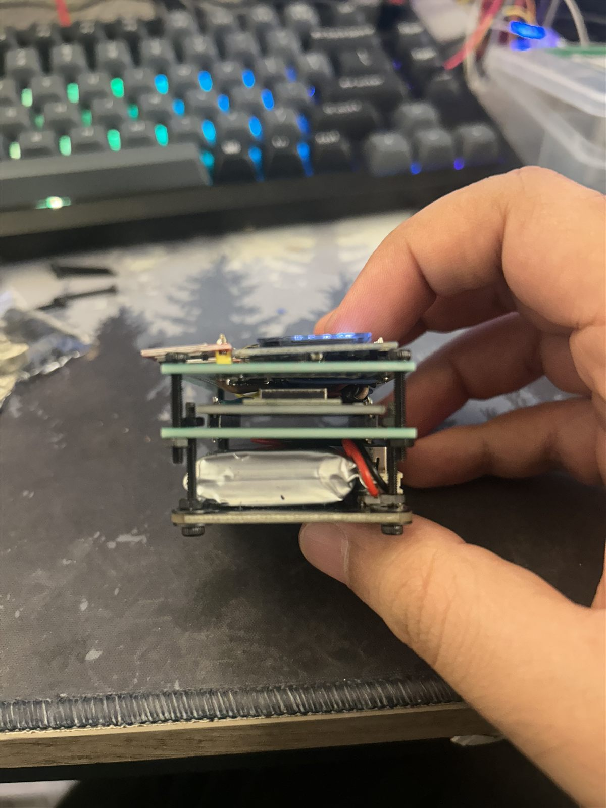